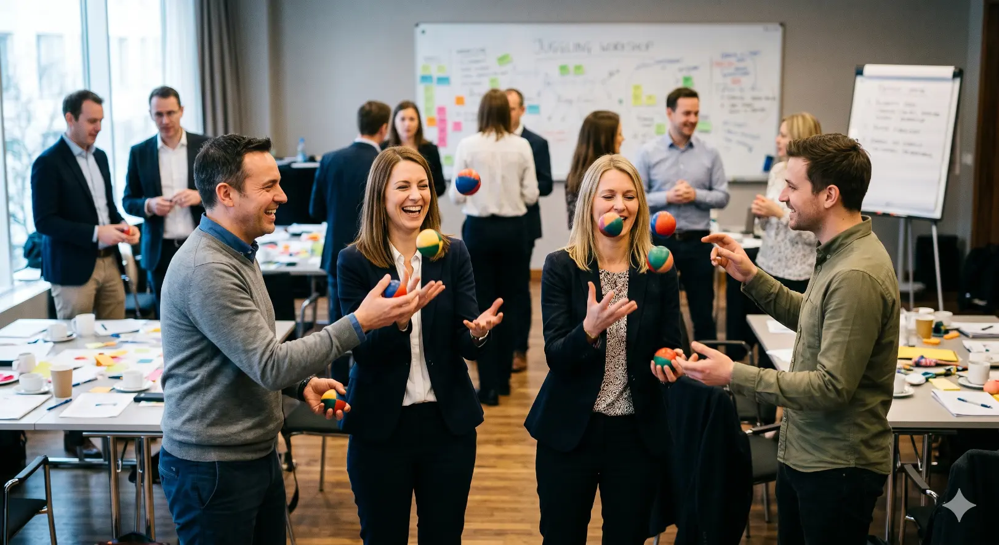

Team development depends highly on the situation your team is in.
If your team has already worked together for a while: did routines creep in, did the focus become a bit blurry and the energy a bit so-so? Does it feel like some extra oxygen would be great?
If your team is new: does everyone know their strengths (and those of their colleagues), how to complement and support each other, how to make decisions and get into action fast, and have fun together? 😊 Does it feel like a strong common basis would foster collaboration?
No matter if you are a project team, a functional team or an ambitious Management Board: our diagnostic tools, workshops, coaching, and Deep Dives are getting the best out of everyone in your team and will optimize your collaboration. Fully customized for you.
If you want to get a sound impression of the performance status in your team,
use our free BPTI (Best Performance Team Inventory).
What clients say
"MLG helped us focus and further develop the professional collaboration at top level. The toolset, the customization and the expertise of the MLG experts enabled us to significantly increase our self-awareness and fully leverage our individual strengths."
Christian von Toll, CSO, Weidmüller